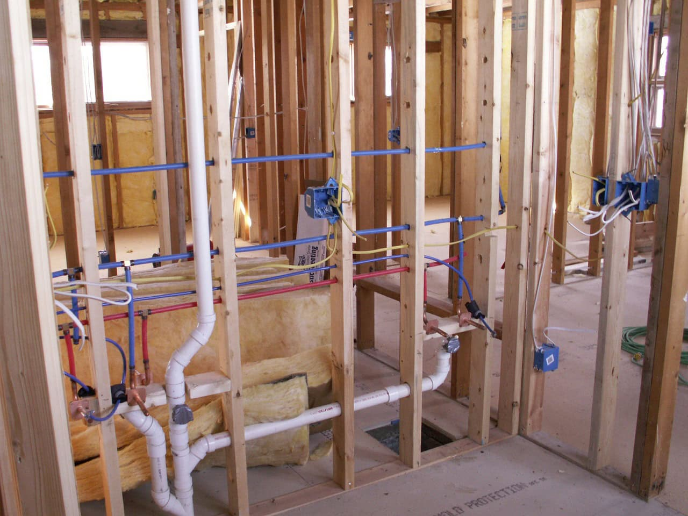
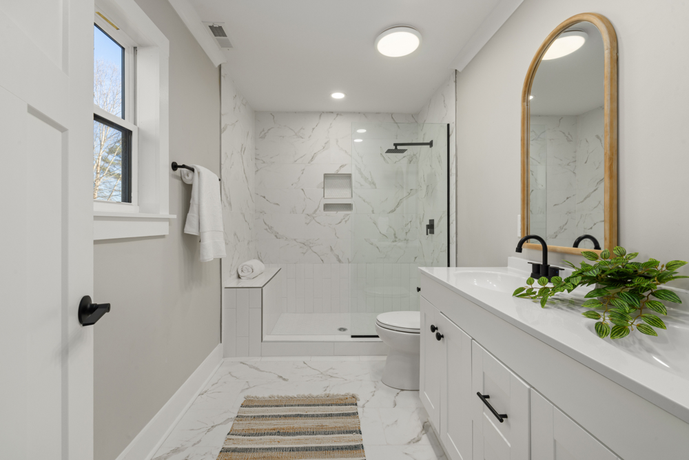
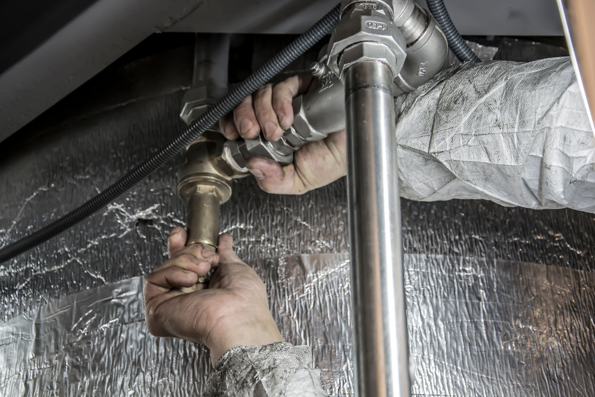

Contractors
Project management expertise, procurement coordination, qualified field supervision, quality control, and performance-driven accountability.
View contractor page →Systems Plumbing is based in the Denver, Colorado area and specializes in residential plumbing installations throughout the Denver Front Range—from Ft. Collins to Castle Rock. The company installs plumbing in new single family homes, town homes, and condominiums.
Since 2001, Systems Plumbing has built a reputation through strong, performance-based relationships with quality residential builders, purchasing managers, warranty managers, job superintendents, and satisfied homeowners.

If you are a contractor, purchasing agent, homeowner, or potential team member, Systems Plumbing invites you to experience a company culture focused on responsiveness, accountability, and long-term service.
From the first request for proposal to warranty service, Systems Plumbing is committed to delivering a high degree of professional plumbing support.
Questions, warranty guidance, and 24-hour emergency response are all built into the customer experience.
Founded in 2001 and headquartered in Westminster, the company continues to serve builders and families across Colorado’s Front Range.
The original website combines a lot of information into one long page. This redesign separates the experience into dedicated pages so each audience can quickly find the information that matters to them.
Project management expertise, procurement coordination, qualified field supervision, quality control, and performance-driven accountability.
View contractor page →Business-hours support, builder-directed warranty guidance, 24-hour emergency response, and practical information for protecting your home.
View homeowner page →Opportunities for high-quality plumbers, foremen, project managers, and support staff who want to work in a culture of professionalism and pride.
View careers page →
This concept keeps the Systems Plumbing color palette and company information, but elevates the presentation with bold typography, more purposeful page structure, and photography that feels more current and confident.
Home, Contractors, Homeowners, Careers, About, and Contact all stand on their own.
The Systems Plumbing logo becomes a more prominent part of the brand experience.
Updated portraits and team imagery create a more personal and credible presence.
All of the important content from the current website is retained and reorganized for clarity.
